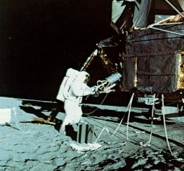
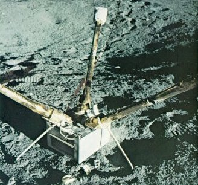
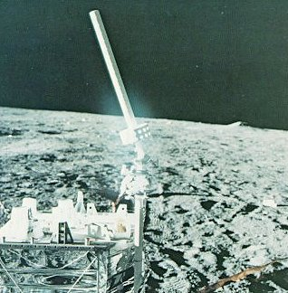
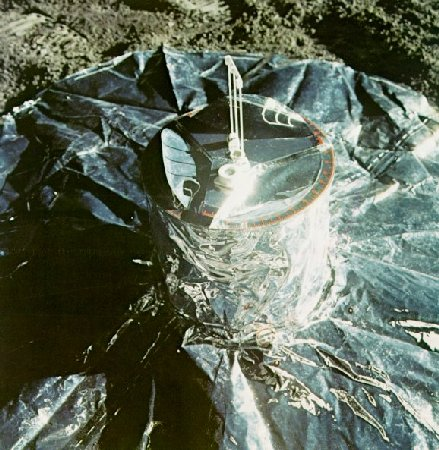
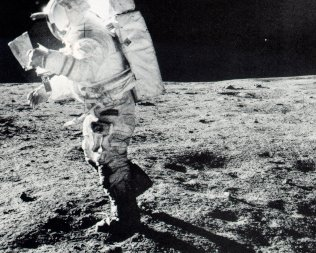
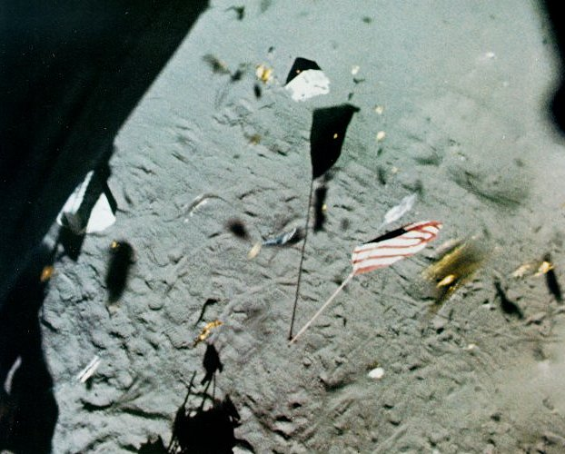
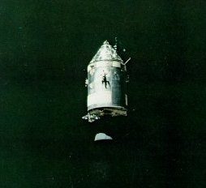
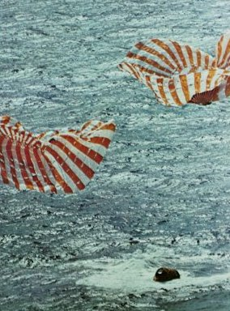
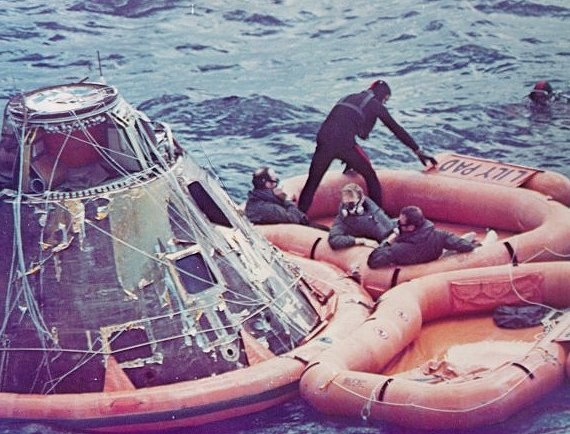

|
| Apollo 14 Astronaut Shepard fits a core tube section to the extension handle in preparation for taking a vertical sample of the subsurface material. Core tubes were among the handtools carried on the MET. |
|
|
| Apollo 14 Astronaut Shepard fits a core tube section to the extension handle in preparation for taking a vertical sample of the subsurface material. Core tubes were among the handtools carried on the MET. |
|  | Beam cautiously removes hot fuel capsule from its graphite cask in order to insert it into the Radioisotope Thermoelectric Generator (RTG) at his right. The temperature of the capsule, which was filled with plutonium-238, is about 1350° F. |

| The RTG was the powerhouse for the entire experiment package. The temperature difference between the fuel capsule and the finned outer housing was converted into electrical power by 442 lead telluride thermocouples. Starting at about 74 watts, the output to the central station will continue for years at a slowly diminishing rate. |
|  | With its three gold-covered booms outspread, the Lunar Surface Magnetometer can measure the three orthogonal components of the magnetic field. Periodically, the fluxgate sensors at the ends of the booms are flipped over mechanically to check the calibration. An astronaut initially oriented the instrument by means of the shadowgraph shown at the base of the X-axis (right) boom and the bubble level on the sunshade. |

| The Laser Ranging Retroreflector (LRRR) is a completely passive array of small fused-silica corner cubes that reflect incident light precisely back toward its sources. When the source is a pulsed ruby Laser at a large telescope, the distance from the LRRR to the ground station can be routinely measured within 6 inches. The three LRRR arrays on the Moon permit long-term studies of subtle Earth and Moon motions. |
|  | The top surface of the central station in an aluminum honeycomb sunshield. Before deployment, the antenna and several ALSEP experiments were attached to the brackets atop the sunshield with quick-release bolts. When raised, the sunshield and insulating side curtains provide thermal protection for the electronics. A leveling head on the antenna mast permitted the astronaut to aim the helical S-band antenna earthward. |

| A wavy golden ribbon connects the Apollo 14 Suprathermal Ion Detector and its accompanying Cold Cathode Gauge with the ALSEP central station some 50 feet away. This pair of instruments was also emplaced at the Apollo 12 and 16 sites. The wide range of the three Ion Detector look angles permits study of the directional characteristics of the flow of ions an both sides of the Earth's magnetospheric tail. |
|  |
| The Passive Seismic Experiment is completely hidden by its many-layered shroud of aluminized Mylar. The top of the thermal shroud is the platform for the bubble level and Sun compass that the astronaut used to orient the experiment initially. An internal set of leveling motors keeps the seismometers constantly level within a few seconds of arc. Seismic motions are recorded on Earth with a magnification factor of 10 million. The network created by the four ALSEPs that have this experiment enables seismologists to locate moonquakes in three dimensions, and to study the seismic velocities and propagation characteristics of subsurface materials. |
|  | Like any tourist in a strenge place, Ed Mitchell consults a map on his way to Cone crater. He was photographed by his companion, Alan Shepard, during the second Apollo 14 EVA. During their 9 hours on the lunar surface, these tourists collected 95 pounds of lunar samples to bring home. Their main complaint during their stay was the way the lunar dust stuck to their suits almost up to their knees. |
|  |
| The flag flutters an the Moon in the genuine wind of a rocket exhaust as the ascent stage of the Apollo 14 lunar module Antares lifts off from the Moon. Pieces of the gold-coated insulating foil turn off the descent stage by the blast were also sent flying. Who knows how many thousands of years will pass before a wind of vaporized rock from some nearby meteorite impact once more sets this flag flapping? |
|  | In the blackness of space, the Apollo 14 command-service module Kitty Hawk gleams brilliantly as it draws near the camera in the lunar module Antares. The single-orbit rendezvous procedure, used for the first time in lunar orbit on this mission, brought the two craft together in two hours. After crew transfer, Antares was guided to lunar impact at a point between the Apollo 12 and 14 sites. The resulting seismic signal, recorded by both instruments, lasted 1 1/2 hours. |
|  | At its journey's end, the Apollo 14 command module splashes down into the sparkling South Pacific, some 900 miles south of Samoa. The parachutes collapse as they are freed of their load. On this occasion, the command module remained right side up in the water after landing. Like a kayak, a command module was just as stable in the water when it was upside-down (stable two). If it toppled over to an inverted position, as happened on other splashdowns, the crew could right it by means of inflatable airbags. |
|  |
| Astronauts Mitchell, Shepard, and Roosa, and a recovery team frogman wait aboard the raft Lily Pad for a helicopter pickup. With the hatch open, the command module was vulnerable to swamping, along with its priceless load of lunar samples and film, which is why frogmen routinely lashed an inflated flotation collar around a spacecraft. |

|
| The veritable pay dirt of the Apollo expeditions is the collection of lunar samples that is now available for the most detailed examination and analysis. Scientists have long been aware that our understanding of the nature and history of the solar system has been biased in unknown ways by the fact that all of the study material comes from one planet. Although meteorites are fascinating samples of the material of the solar system at large, there is never any direct evidence of the source of an individual meteorite. Now, within a few years, mankind has assembled the material of another world, recording where each piece came from and what was nearby. Here, scientists at the Lunar Receiving Laboratory work with an Apollo 14 sample in a sterile nitrogen atmosphere. |